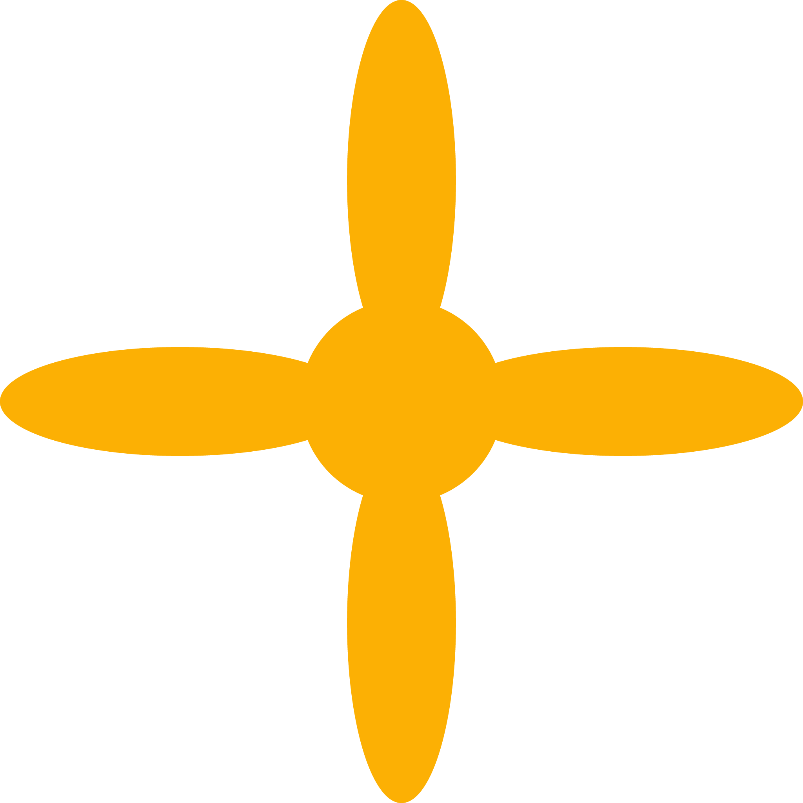

Modelling a Quadcopter
What is a Quadcopter?
-
A quadcopter is a multirotor helicopter that is lifted and propelled by four rotors.
-
Quadcopters are classified as rotorcraft, as opposed to fixed-wing aircraft, because their lift
is generated by a set of rotors (vertically oriented propellers).
-
Quadcopters generally use two pairs of identical fixed pitched propellers; two clockwise (CW)
and two counterclockwise (CCW).
-
These use independent variation of the speed of each rotor to achieve control.

-
Hover (up/down)
-
Pitch (forward/backward)
-
Roll (left/right)
-
Yaw (rotate left/right)
The Lorenz Equations
\[\begin{aligned}
\dot{x} & = \sigma(y-x) \\
\dot{y} & = \rho x - y - xz \\
\dot{z} & = -\beta z + xy
\end{aligned} \]